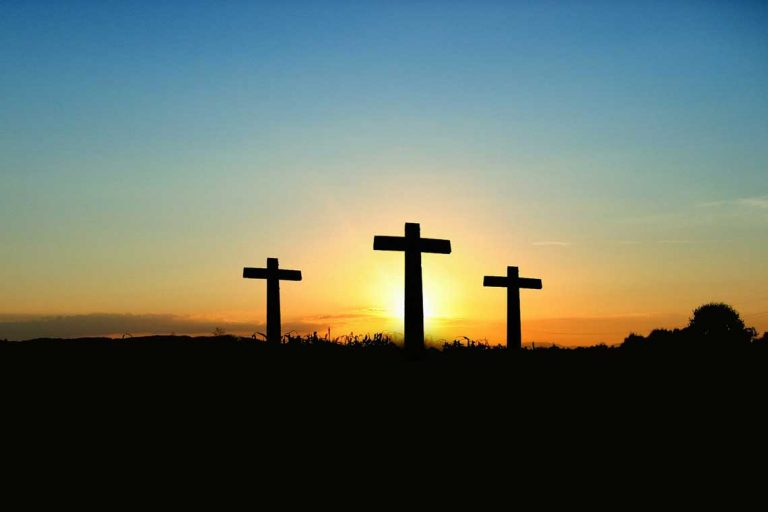

Clarion Call

Lo! We live in a shrinking world
Gone are times of barbaric superstition
When the dead sucks the living dry
Civilization has taken of part of the eye's scale
Who can do the rest – Christainity?
For it makes man God's image
Those who stick pragmatically to vain tradition
Are the remnant and saints of fools?
Tradition has ossified the world to death
In pursuance of shadow instead of substance
Religious taboo has branded and blinded many
Who are in fetters, in the devil's company?
The pulpit and pew can't offer salvation
In Christ only we have our redemption
It is easy to say, "I have not heard His clarion call"
Haven heard, there is no excuse
For haven had your life abuse.
By Igbinijesu John
Summary
Clarion Call
Bible references: Matthew 11:28
The Church
Born in the resurrection power
Formed fashioned by His power
And grown in the heat of apostolic power
She is an organism not an organisation
Created out of Revelation, that He is God the son.
The living divine incarnation of Christ
That is of heavenly origin
The only institution on the shores of time
That is perpetually eternal,
To be rapture on the eve of closing of time
Beyond the sky to the heavenly Jerusalem
She is part of Christ body and His habitation
As the cycles of eternity roll on unending
Her history is half the biography of Christ
The world is God’s creation as a creator
He is God’s creation as a life-Giver
He is an offspring of God born in Christ
He is an embodiment of heavenly elements
He bears God’s image
A mirror reflecting the divine perfection
And God views his own likeness in her
She feeds on heavenly food
And breathes the atmosphere of heaven.
God and Christ in man is the Church
The wisdom, love and acts of God is obvious in Her
He is all spotless fair, radiating God's beauty
Angels bestows their ministry to him
Who is Holy, Spirit filled and Holy-Spirit governed
He is in the world and the world not in him
Like a fish in salty ocean, and the fish is not salty.
Sooner or later time shall clock his rapture
For a faultless presentation of him to Christ
The union undiminished as eternity rolls on.
By Igbinijesu John
Summary
The Church
Bible references: Acts 2:47
The Saints
In the womb where they began
God called them to be His own
Through the time and tide of life
In utmost constancy and sacrifice
His grace fed their brief life
They of whom the world says
A pious and godly race they live
In this bedeviled world they stay
Genuinely pious and cultured
Never thinks with keen edge of vanity
In head and heart; every sense of it
For they were haters of sin
Always calm, cheerful, cool and collected
With broad mindedness and fellow – feeling spirit
Modest in success and cheerful in victory
'Men not of an age, but for all time'
Celebrated for truth; remarkable for contented disposition
They were amiable, approachable, accessible
For their versatile quality of head and heart
And spirit purview transcending the mundane
Lo! they aforetime do sleep
Haven overcome the mortal foes
Put it in mind, also.
By Igbinijesu John
Summary
The Saints
Bible references: Acts 9:32
The Greatest Honour
The time will come for our deeds to be erected
For our lives to be evaluated
For the mark we make to be describe
What will be said?
The greatest honor to be bestowed is
"And he brought people to Jesus"
A honor that is not restricted to class and creed
Shall our biography be short and complete as Andrew's?
'And Andrew brought Philip to Jesus'
Shall it be long and incomplete as Methuselah's?
'He live 969 years' without a soul for Christ
(He that is called to preach
Let him not stop to be a king)
Pastor are wind in the spirit
Blowing were He listed
Leading the flock of Christ
Away from the throes, to Christ
With the Bible and not what he purport
They know God's will, which is knowledge
They do His will, which is achievement
They are among the ones
Who have overcome thought, tongue and teeth
And every now and then all alone
They are learning at Jesus feet
Hand and heart in all time and tide
They bring Gospel truth to needy sinners
The soul-saving, the life changing
And heaven-gaining Gospel of Christ
They are ministering angels
That preaches, project and preserve His image
They bring springs of living water of arid heart
God's out stretched hand; a hall mark of His concern
To suffering sin-bound humanity
'if any be called to preach'
'Let him not stoop to be a king'
By Igbinijesu John
Summary
The Greatest Honour has a quote from Philip Brooks in parenthesis.
Bible references: John 1:41-42
The Bible
This is the word and work of God
It is God in ink and paper- the bible.
Jesus Christ is the Bible personified
It keeps man in the tune with his creator
A sign post that gears the soul God-ward
Nothing short of a masterpiece from God
The book of God's science and art gallery.
In God's pregnant word
Our dear lord's token of love
To our humble human soul
Is the living and lucid Bible
It out classes all other book and scrolls
It out- strip and dwarf other books
The bread of life it gives is good and whole-some
For Christians balance spiritual diet
Its food for thought is interesting and instructive
So full so deep and so pregnant
His word is ever relevant
With stories as old as the earth
Study with the motto: tarry not hurry
Like a miner in search of concealed treasure
Listen, read, mark, learn and assimilate
Not only for creed but for conduct
Not only for belief but for behavior
Though much dust and doubt rise against it
It is practual and applicable
It gives hope for life with ringing certainty
And solutions great dilemmas of life.
For in it is the way of salvation and eternal life?
By Igbinijesu John
Summary
Bible references: John 6:63
Redeemed
When I was lost He found me –poor lad
What cost! His blood purchase my soul and all
Hence fort unto Him I am glad
To rest when home to me He call
A wretched sinner he spared
With his living and lucid word
That when my body and soul are apart
And to yonder celestial shore I depart
I may rest at His own glorious sight
Longing forward for the home
That lies awaiting me above
Come the day when I see
His face bowing my head and knee
In ecstacy of the wonderful moment
As I join the angels in merriment
By Igbinijesu John
Summary
Bible references: Revelation 14:4
Restoration We Need

We have many organizers
But few angonizers
Many for Christ are singers
But few for Christ are clingers
Lots of pastors, but few wrestlers
Who against sin wrest
Before after many fears
Preaching repentance with many tears.
Some go to church to show much fashion
For the lost they have a little passion.
Christian books abound because of many writers
Against Satan who will join the few fighters
Failing here, we fail every
We go home empty as we came, no unction
Unknown tongues flow, what a commotion
We thought, it makes us new creature
As it subsides the rattles
We took it for a revival
Lo! We are beggared and bankrupt
We fear if we will be rapture
Because we are not broken or bent
How long will it take us to repent?
By Igbinijesu John
Summary
Bible references: Psalm 85:6